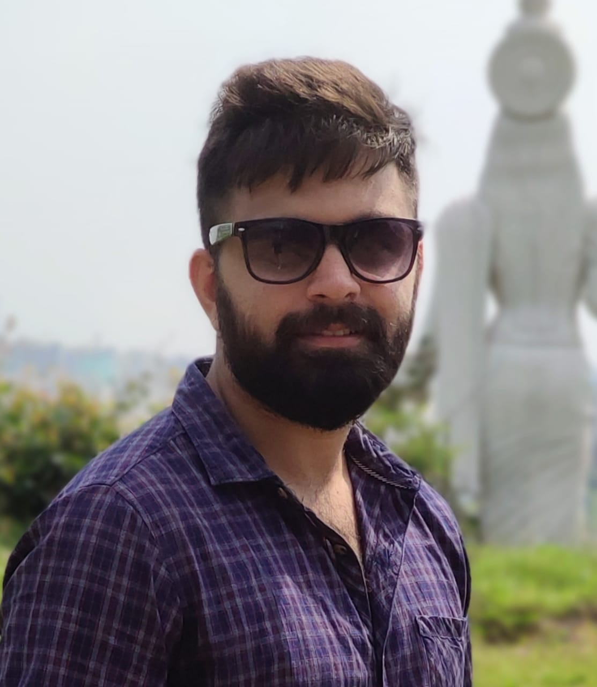
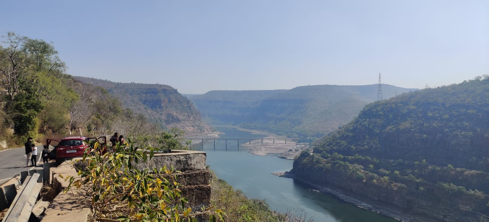
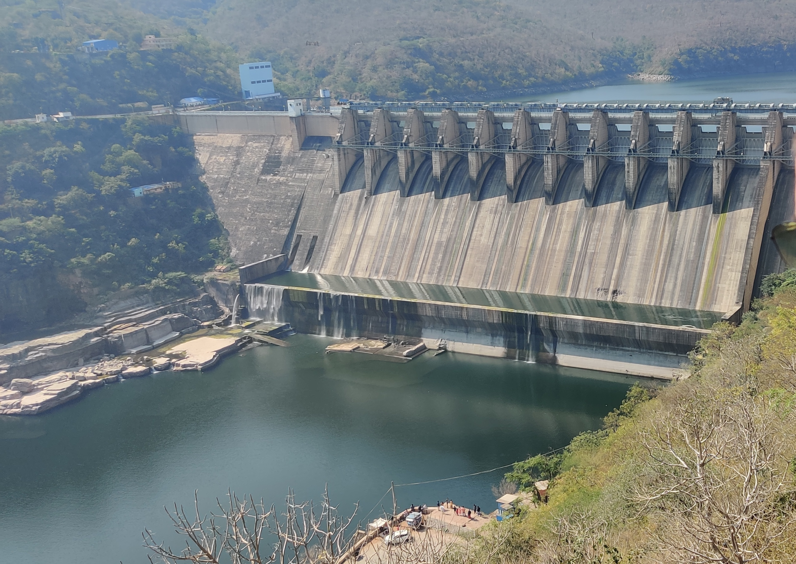

Our Cheap & Best Weekend Trip
By Pavan Sai Krishna...
If you are looking for a small trip to spend your weekend, then this blog can surely help you. This trip covers three areas in Andhra Pradesh, Srisailam, Mahanandi, and Ahobilam. Starting on Saturday morning, the road trip ends on Sunday night. Come, look for yourself how our personal experience was and see if you can relate to it.
Srisailam is a sacred pilgrimage of Lord Shiva with the name Sri Mallikarjuna. The Temple is one of Jyotirlingas. Many Hindus believe it a privilege to visit these Jyothirlingas placed across the country. Srisailam is also home to Brahmarambika Devi, wife of Sri Mallikarjuna Swamy. The temple is one of the Shakthi Peetas.
Srisailam is considered very sacred as it has both a Jyothirlingam and Shakthi Peet.
Mahanandi is around 220 km away from Srisailam. It is home to Lord Nandi who is a guard to Shiva. It said that Lord Shiva rides Nandi wherever he goes. Mahanandi is located in the deep forest of Nandyala. It is home to the famous Koneru which is well known for its crystal clear water.
Ahobilam is home for Narasimha Swamy. The town has 9 different Narasimha Swamy Temples. Many devotees visit Upper Ahobilam or Yeguva Ahobilam temple which is the actual Temple. For those who cannot go into the deep forest, another Temple, Dhiguva Ahobilam was constructed.

This may sound like pilgrimage but it’s not just that. There are many attractions on the way to Srisailam. In this blog, we will let you know how did we start and how the trip ended with modifications and improvisations.
Day 1 - Saturday - Srisailam
Started around 6:30 AM from Hyderabad and Reached Srisailam at 11:30 AM (total 4 & half hours). One halt for breakfast.
Excellent road journey gets better as we get closer to Srisailam. As we enter the Nalla Malla forest area (Vehicles are not allowed after 9 PM, that is the reason you find different maps depending on the time you are traveling. The morning map takes us through the forest route which is shorter and faster. Nights we have to go around and travel 7 to 8 hours avoiding the forest), the drive gets exciting and beautiful.
The roads are so curvy so it’s better to carry chocolates and gum to avoid stomach getting upset. Further we go, the ghat road begins. The road descends near the Srisailam Dam and after crossing the river through the bridge, another ghat road ascends towards the temple town. You can stop at the viewpoint and get great pictures of the dam. The sun was very hot and proper preparation is necessary to tackle the heat (carrying more water, glucose, and anything that helps). As soon as we entered SriSailam we went to darshan with 150 rupees ticket. Which took about 45 minutes. After darshan, we went to annadhana sathram and had lunch (one dal, a curry, sambhar, and curd). There is a temple near Srisailam, Ista Kameshwari temple which is deep in the forest where ordinary vehicles cannot travel. We need to hire jeeps that can climb difficult paths very easily. Unfortunately, we couldn’t go to that temple because the elders in our group couldn’t take that challenging road journey. We immediately started to Mahanandi.

The journey to Mahanandi from Srisailam is the most memorable of all. We drove across the Nalla Malla forest with great roads and beautiful scenery. I repeat the scenery is wonderful. The road takes us by the edge of the hills like the ones we see in movies( I wonder why no one uses these roads to make such scenes in movies). As we go deep into the forest we see lots of monkeys jumping on the sides of the roads and there are these majestic pillars (maybe they are part of a huge bridge of olden days). They are so big that they stand in equal height with the hills (I know this because we started driving on the hill road beside one of these pillars, and met the body of the pillar at every turn as we ascended that hill until we met the tip).
After the forest ends, the highway begins. The highway is very smooth except for two-three places where the road construction is still going on (expect heavy traffic in these two-three spots). We started at 2:30 PM and reached around 7 PM. To reach Mahanandi, we have to cross Nandyala forest which is another scenic and challenging road. After reaching Mahanandi we took accommodation in Haritha hotel which is a part of Andhra Pradesh Tourism. An elder in our group spoke with reception very smoothly and managed to get a big room for a regular price (the regular price is 800). We went to the temple immediately and we were told that bathing in famous koneru is not allowed due to covid restrictions. The water was crystal clear like always but it was filled with algae as no human entered in a year. After darshan, we inquired about a good place to eat and had dinner (the hotel has good meals apparently but we had tiffins that night, it wasn’t great). We slept in Haritha that night and the next day we started to Ahobilam.
Day 2 - Sunday - Ahobilam - Kurnool - Hyderabad
We started around 8:30 AM after breakfast at Mahanandi (breakfast was at a new place this time and it was good). We looked at Ahobilam pictures on the internet and were excited to visit the Temple. We drove for 1 and a half hour and reached a Temple google took us. The Temple was Dhiguva Ahobilam and was nothing like in the photos. Disappointed, we asked someone working at the Temple. They told us that the real Temple was in the forest 9 km further. We immediately drove to that Temple and there were many vehicles parked on the way. There are 9 temples of the God Narasimha in that area. We should’ve had that information before going there. This temple we just arrived is in between big hills that are so beautiful to look at. As we were about to enter the Temple, we were told that even that wasn’t the real temple and the real one is further into the forest and can only be visited if we hiked for 2 kilometers. Due to the time factor, we went a little further and returned as we have to start back to Hyderabad. Ahobilam is covered fully with monkeys that constantly look for food and if you are carrying something then they definitely try to snatch it from your hand. For the trek, you can rent sticks for three rupees to hold it while you ascend to the real temple and drive away monkeys coming your way. I was disappointed that I couldn’t get to that temple as the hike was exciting and the path goes parallel to a small valley of forest water. If only we knew about this trek, we would’ve started early and hiked that forest path.

We started back to Hyderabad at 1 PM with a little diversion. We drove to Kurnool first. We had lunch there to see how authentic Rayalaseema food tastes like (which we didn’t know because we had biryani there) and visited Konda Reddy Burj. After that, we started to Hyderabad at 5 PM and reached by 9 PM the same night.
Make Sure You Make Good Use Of The Resources
The car we rented was S-cross Nexa which gave 18.9 km average mileage. That saved so much money for us. We chose toll roads everywhere and to enter the temple town and forest roads, you have to pay their own tolls. In total, we spent 1000 rupees on tolls, 4500 rupees on diesel and our overall expense were 13000 rupees approx.
This trip was with very little planning as you can see. But still, it turned out to be gold. The trip through Nalla Malla and Nadyala forest, the hillside drives, wildlife, and the architecture in these temples are worth every penny. If you have time to spare, there are other attractions in those areas that are not mentioned here. There are safaris, other small temples close by, and the sacred Paladhara Panchadhara, where a small thread of water comes from deep inside of the mountain.Plan your trip this weekend and cherish great memories.
Safe travels!